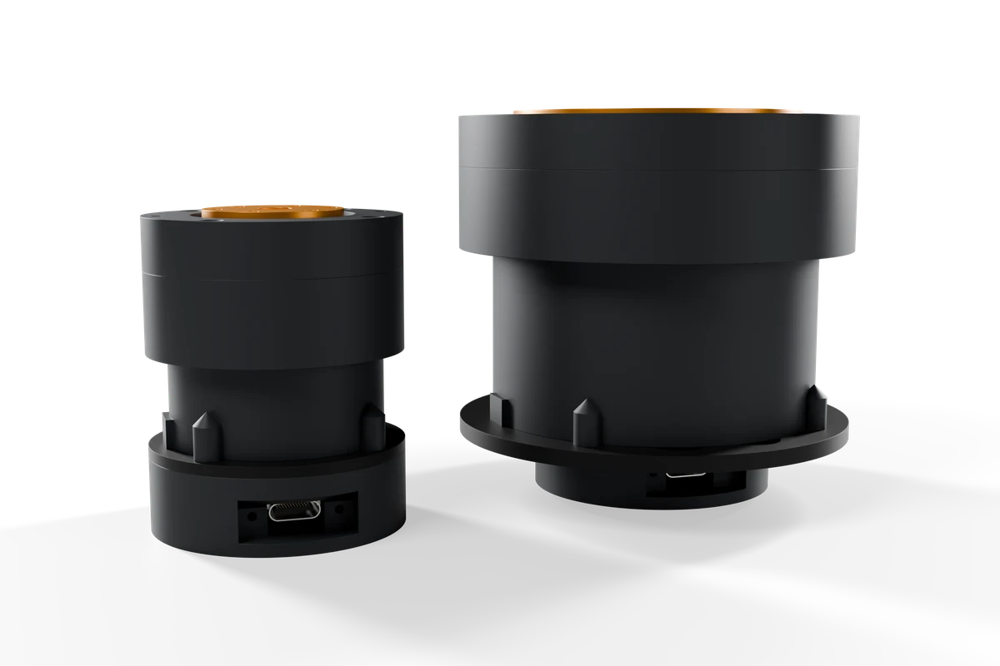
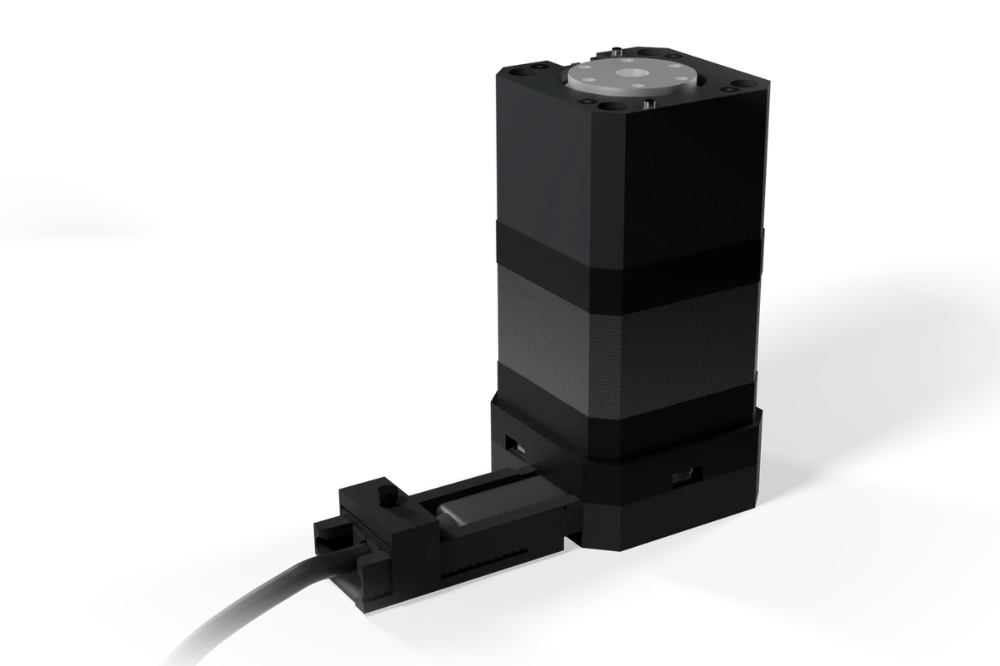

Robot parts that arrive finished.
Motor nodes with the driver, encoder, controller and gearbox built in. Plug in a USB-C charger, open the app in a browser, move. They’re the units our commercial leader arm is built from.


Fig. 01 — Two SmartServo G nodes in side elevation, and a SmartStepper 17 on its USB-C cable with a Cable Clip. Concept renders.
It’s found, named and ready when you plug it in.
No wiring puzzle
No driver, encoder, microcontroller and supply to match up. One calibrated unit.
One app
Calibration, limits, jogging and live plots in the browser. The same app runs one node or a full station.
Python when ready
Script one node or a dozen over CAN, from Python, ROS 2 or LeRobot.
Test card in the box
Each unit’s measured numbers, printed and stored on the node.
Every node, in one list.
Board, then node, then geared node.
Start with a board on your own motor, add our motor and housing later, then a reducer. The node keeps its identity and calibration history as it grows.

For people who build.
Printer and CNC upgraders
Closed-loop axes that report a stall instead of shifting a layer, on STEP/DIR from Klipper, Marlin or GRBL.
Robot-arm builders
Joints that know their position, on one cable, without a pile of separate electronics.
LeRobot and SO-101
Quiet, backdrivable joints with calibration that lives on the node, for leaders, wrists and grippers.
FOC tinkerers
Field-oriented control on gimbal motors without assembling a driver, encoder, MCU and supply.
Camera and astro rigs
Silent, repeatable moves for sliders, pan heads and turntables.
University labs
Documented parts for courses and research rigs.
Tell us what to build first.
Tell us which nodes you want and what you are building.